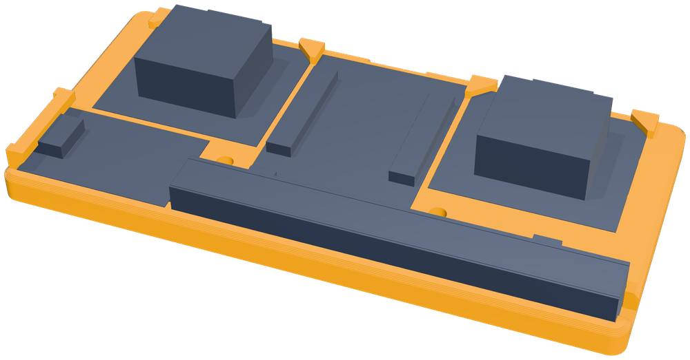
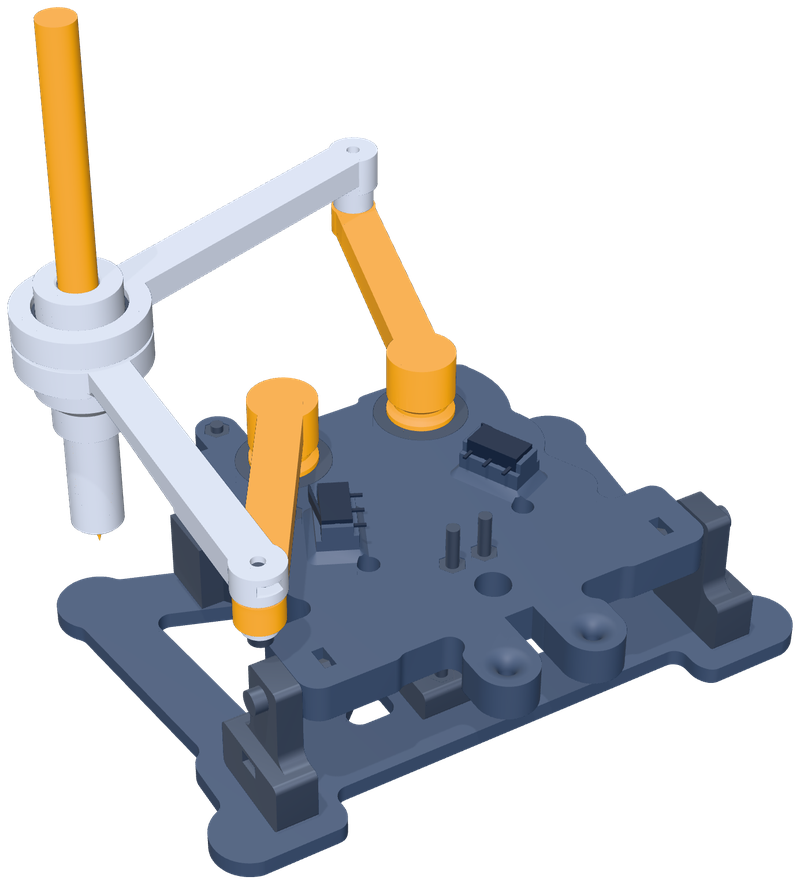

Flower
Flower Star
Star Spiral
Spiral House
HouseWatch it draw
Your kid builds a machine – and understands how it works
The PlotBot-Kit isn't a snap-together set with picture instructions. Your kid prints the parts, presses in bearings, wires up motors and ends up writing programs of their own. Short explainer boxes in the book cover the why behind the key steps.
- Mechanics
Arms, gears, bearings
Two motors each turn an upper arm, and the forearms meet at the pen. Kids see why a little play between the gears inside the motor makes a line wobble, and what a ball bearing is for.
- Electronics
A microcontroller and motors
An ESP32 drives two stepper motors and a servo that lifts the pen. At start-up each arm moves to a limit switch; from there the robot counts every step.
- Coding
Blockly on a phone
Kids snap blocks together: pen down, move 20 mm, turn 90°, repeat four times. Tap "Zeichnen lassen" and the robot draws a square.
- Geometry
Angles you can see
Why does the pen turn 144° at each of the five points of a star? Five times 144° is 720°, two full turns. On paper, the maths turns into a picture – and a maths mistake into a crooked line you can track down.
What you'll need, and what to watch out for
- Age
- Kids aged about 12 and up, building with a parent
- Time
- A project for several afternoons. Printing alone takes an estimated 14 hours – the printer does the work while you do something else.
- Power
- A 5-volt USB power supply rated at 2 A or more, plus a USB-C cable. Only draw on the power supply: a computer's USB port can't deliver enough current.
- Soldering
- None. The microcontroller board (ESP32) comes with its pin headers already soldered, and every wire plugs in.
- Tools
- 2.5 mm hex key, small screwdriver, needle-nose pliers, small file
- Devices
- A 3D printer (220 × 220 mm bed), the USB power supply, a computer at most once, to load the firmware onto the board, and after that only a phone
The book lists the parts to buy, with quantities: the board, two motors with drivers, a servo, limit switches, ball bearings, screws and a felt-tip pen. It also tells you how to stop the robot safely: pull the plug.

No app, no internet – the robot brings its own Wi-Fi
Switch PlotBot on and it starts its own Wi-Fi network, called "PlotBot-" plus four characters. Connect your phone and the control page usually opens by itself. If it doesn't, there's a sticker with two QR codes: one connects the phone to the Wi-Fi, the other opens the control page. The program that generates the sticker is part of the downloads.
A wizard on the phone walks you through setup in four steps. After that, the robot draws ready-made pictures, writes names, plays tic-tac-toe against your kid – or runs whatever your kid has built in Blockly.

For makers: specs you can check the maths on
PlotBot is a five-bar SCARA: shoulders 36 mm apart, 65 mm upper arms, 90 mm forearms. The firmware does the kinematics itself. The pen tip lags slightly behind the holder, so the firmware overshoots each corner a little to keep it sharp.
Kinematics simulator: how accurately does a five-bar linkage draw?
| Controller | ESP32 (ELEGOO ESP-32, headers pre-soldered) |
|---|---|
| Drive | 2 × 28BYJ-48 with ULN2003 drivers, half-stepping |
| Pen lift | SG90 servo with an eccentric cam, gentle lowering |
| Mechanics | Five-bar linkage with ball bearings |
| Drawing area | 80 × 80 mm |
| Homing | 2 limit switches; calibration with a test sheet, values survive firmware updates |
| Printed parts | PLA, 0.4 mm nozzle, 0.2 mm layers, no supports; largest part 142 × 97 mm |
| Control | Its own Wi-Fi hotspot with captive portal, phone page, Blockly, over-the-air updates |
| Power | 5 V, 2 A or more over USB-C (power supply or power bank, not a computer) |

Buy once, get three books
The book is part of the PlotBot-Kit: on Leanpub you get all three editions as PDFs – plus every future update at no extra cost.
Build it yourself
For families and hobbyists: get and print the parts, flash the firmware, assemble, set up, draw.
Student edition
For kids on a course: the instructors have printed and prepared everything, the kids build and code.
Instructor edition
For schools, clubs and makerspaces: plan, print, let the kids build and run the course. Includes demo ideas and common misconceptions.
Also in the PlotBot-Kit
The print files (STL and 3MF), the ready-to-flash ESP32 firmware, its source code and the program that makes the QR sticker.
Ready to build? PlotBot is waiting.
Get the PlotBot-Kit, start the printer – and by the end, PlotBot draws whatever your kid has programmed.